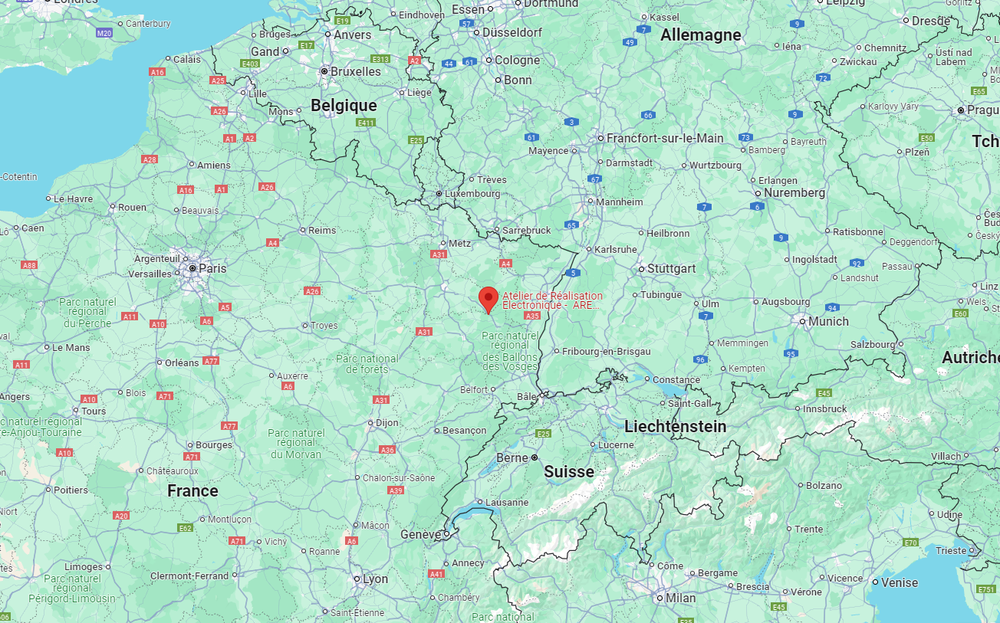

Fondée en 1999, ARE Électronique est une entreprise française spécialisée dans la conception et la fabrication de cartes électroniques. Depuis sa création, l'entreprise a évolué en suivant les avancées technologiques, en se concentrant principalement sur la rénovation de ses machines afin de maintenir un niveau de production optimal.
ARE Électronique offre une gamme de services adaptés aux besoins de ses clients :
Dans ce service, l'entreprise gère l'assemblage de cartes électroniques, intégration de produits et production de faisceaux.
Le département est responsable de la conception de cartes électroniques et de la programmation de systèmes embarqués. Il se consacre à l'innovation et à la création de solutions électroniques.
L'entreprise réalise des prototypes en un temps très court, ce qui permet à aux clients de tester rapidement leurs idées et d’apporter les ajustements nécessaires avant de passer à la production en série.
ARE Électronique prend en charge la production en série dès la conception initiale, garantissant une transition fluide entre le prototypage et la fabrication à grande échelle.
ARE Électronique est certifiée selon les normes ISO 9001, ISO 14001, ISO 13485 et UL, ce qui témoigne de son engagement envers la qualité et la gestion environnementale. L'entreprise intègre également des pratiques de Responsabilité Sociétale des Entreprises (RSE) dans ses activités quotidiennes.
Située à Raon l'Étape, dans les Vosges, ARE Électronique bénéficie d'une localisation stratégique qui lui permet de répondre efficacement aux besoins dans des villes comme Nancy, Strasbourg, Metz, Reims et Troyes. L'entreprise est également à 1h30 de Paris en train, facilitant ainsi les échanges avec ses clients et partenaires.
L'équipe de production compte une trentaine d'employés, incluant des rôles clés tels que la production, chef de production, achats, secrétaire, et chef d'entreprise. Cette structure permet une gestion efficace des projets et une meilleur réactivité aux besoins des clients.